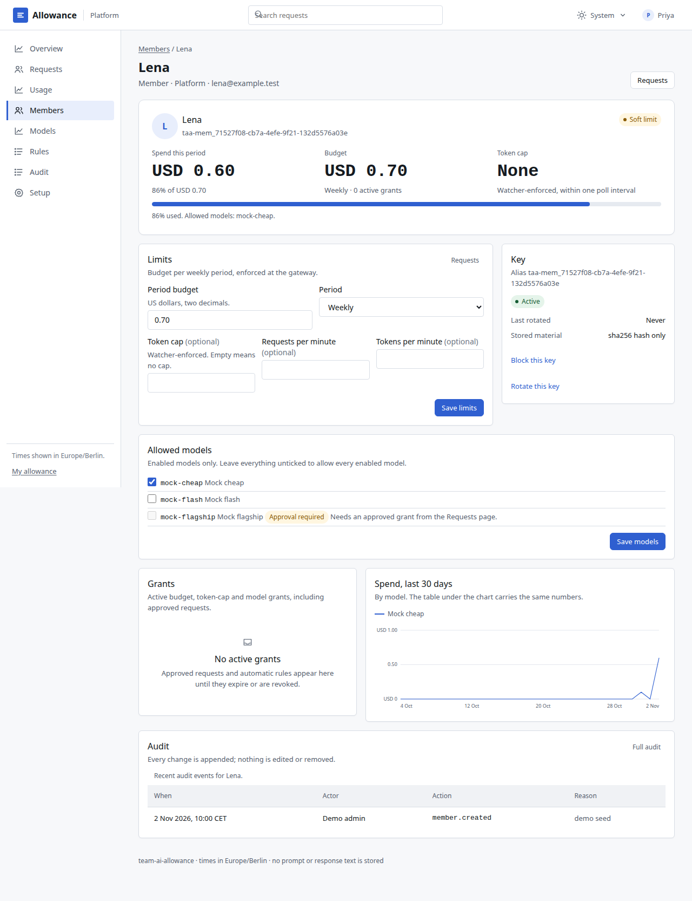
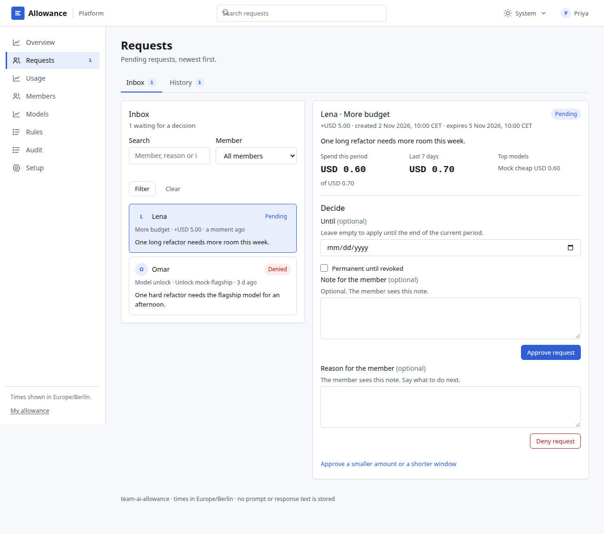
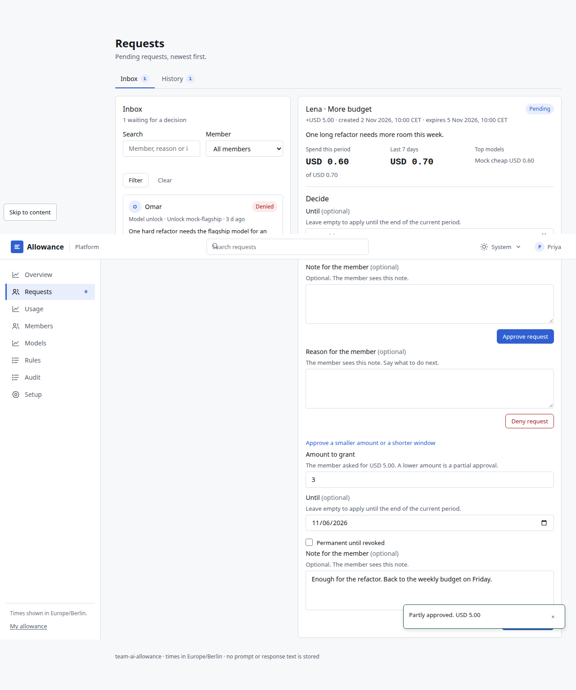
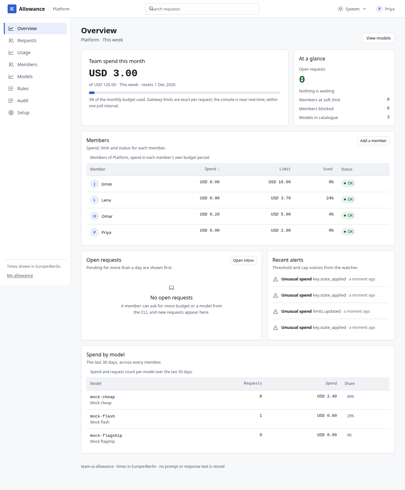
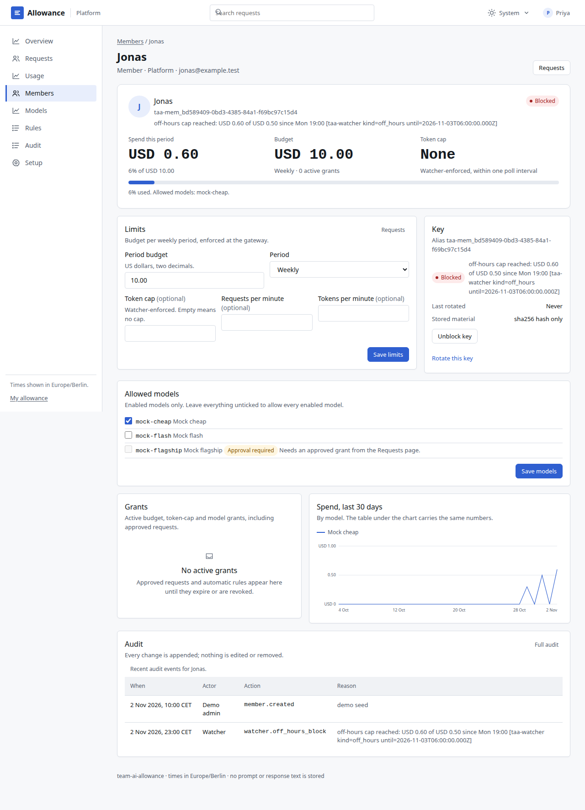
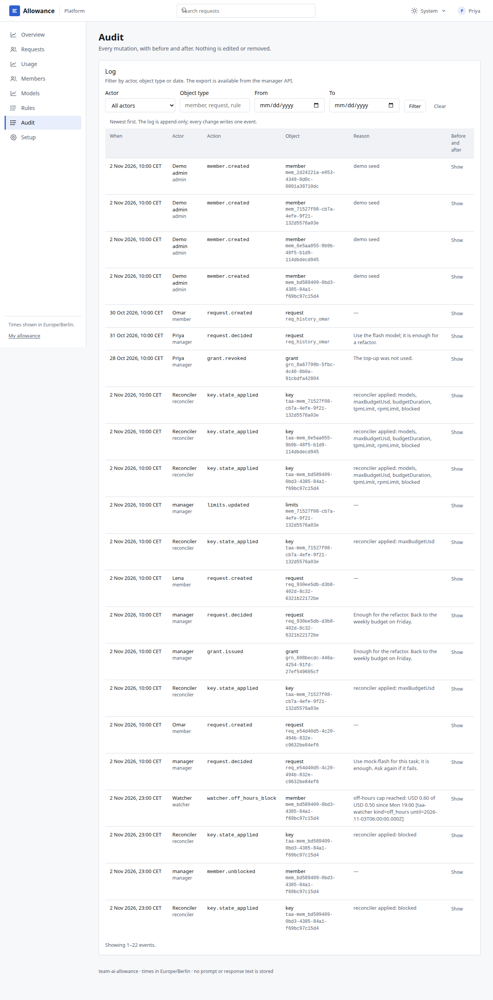
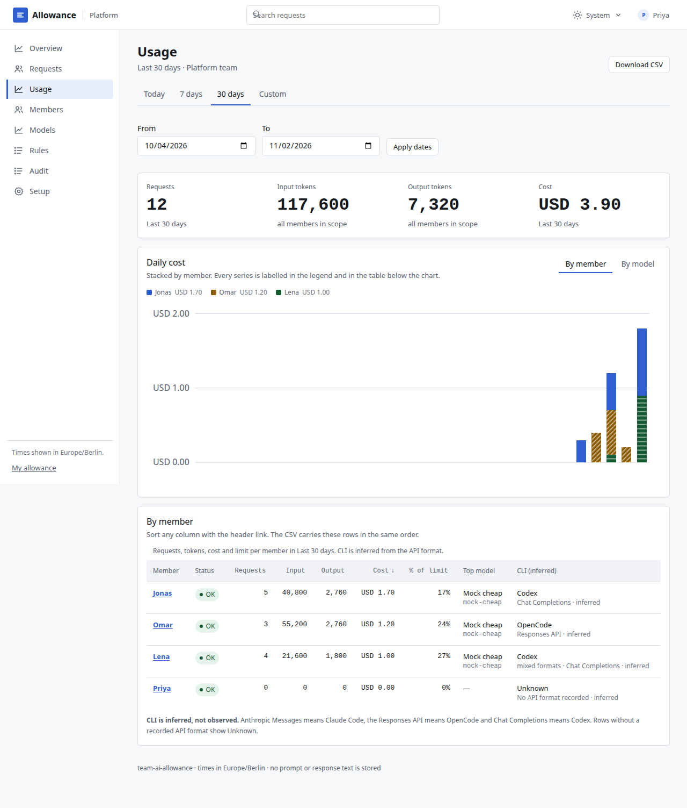
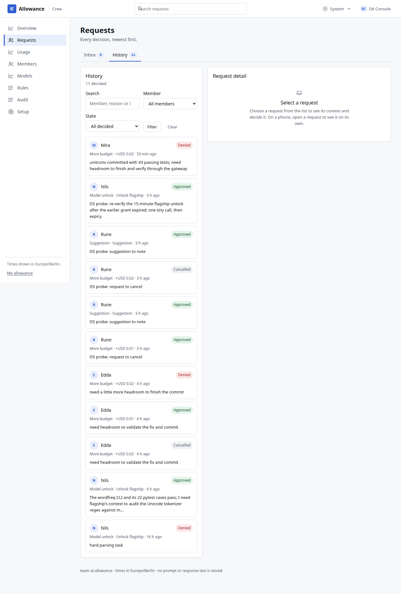
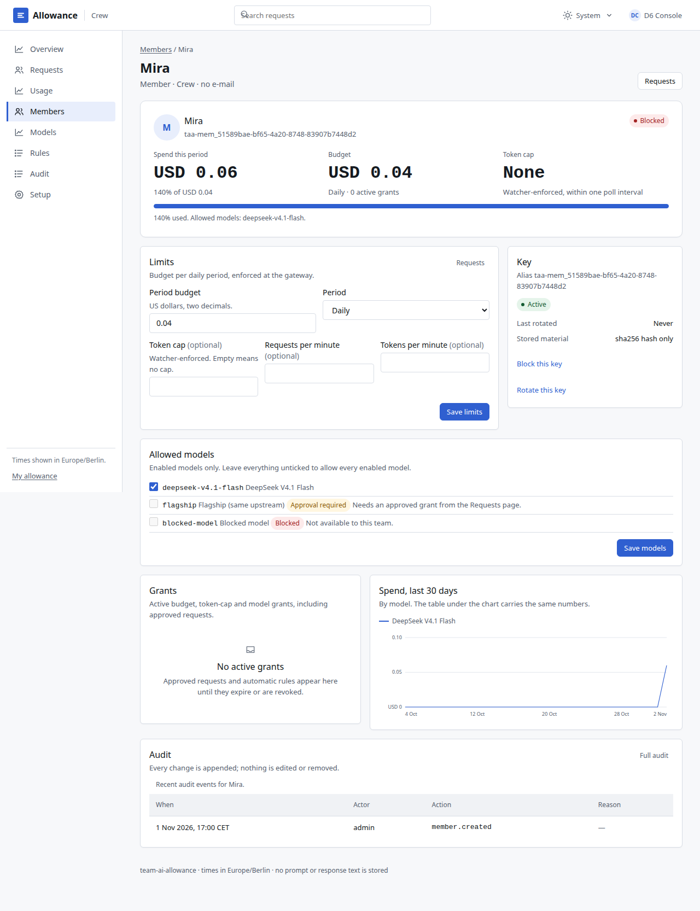
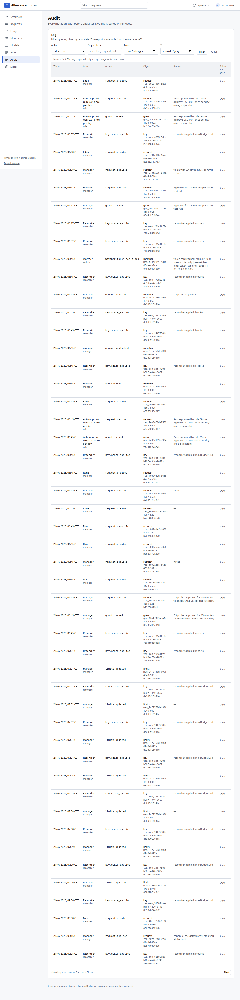

Why 01
The provider key is not on the laptop
A member receives one personal gateway key. Removing the CLI, editing its config or starting a parallel session changes what the laptop sends, not what the gateway allows.
Independent project · v1.0
A team gateway holds the provider keys and checks every member's models and spend limit before a request goes through. A manager console shows the spend and decides requests; an MCP desk lets a member ask from inside the terminal.
01 · The problem
Teams hand out AI coding CLIs that bill the company directly. Limits are missing, or set once and changed only by ticket. A session left running over a weekend can cost more than a laptop, while the one person who needs a stronger model waits.
One forgotten session keeps calling the model after everyone has gone home.
The person who needs the flagship model for one hard task waits for a ticket or gives up.
Nobody can say which member, model or period produced the bill without reading provider invoices.
02 · How it works
The member's machine runs an ordinary CLI. The provider key, the model allowlist and the budget live on the team server, behind a gateway the member does not control.
On the member machine
taa mcp · check allowance, ask for more, ask for a modelOn the team server
For the manager
Model requests carry a personal gateway key. The gateway checks the key before a provider sees the call; the reconciler keeps the key's policy in sync after every change and every five minutes.
Why 01
A member receives one personal gateway key. Removing the CLI, editing its config or starting a parallel session changes what the laptop sends, not what the gateway allows.
Why 02
LiteLLM enforces the model allowlist, the budget duration and the rate limits on every request. The watcher adds token caps, off-hours caps and alerts on top.
Why 03
The setup pack points each CLI at the gateway and removes other providers. If a member deletes those files, the CLI still has no provider key and no route to the team's models.
03 · The request flow
The demo follows one afternoon in the console: Lena reaches her budget, asks from inside the CLI, and Priya approves part of it. The screenshots are from the committed demo run, not a mock-up.
Demo Mock upstream · fixed clock 02 Nov 2026, 22:00 UTC · generated by e2e/flow/flow.spec.ts

mock-cheap answered 200 for Lena's key

spend USD 0.60 of USD 0.70; watcher recorded 2 spend row(s)

Budget has been exceeded! Key=taa-mem_71527f08-cb7a-4efe-9f21-132d5576a03e Current cost: 0.6000, Max budget: 0.73

request req_930ee5db-d3b8-402d-8c32-6321b22172be pending

grant of USD 3.00 until 2026-11-06 on req_930ee5db-d3b8-402d-8c32-6321b22172be

mock-cheap answered 200 after the partial approval

hint named mock-flash; req_e54d40d5-4c20-494b-832e-c9632be84ef6 denied with a note

watcher blocked mem_bd589409-0bd3-4385-84a1-f69bc97c15d4: USD 0.60 of USD 0.50 off-hours

manager unblock held for the off-hours stretch; the key works again

request, decision, grant, limit, watcher block and unblock all present

period table, stacked daily chart, /usage.csv download
04 · The weekend
Four deterministic runs of the same agent loop from Fri 17:30 to Mon 08:00. This is a simulation with a fake clock and example list prices, not a measurement.
Times are Europe/Berlin. The table below has the same numbers.
| Run | Stopped by | Step | Spend at stop | What happened |
|---|---|---|---|---|
| No limits | completed | 5,000 | USD 144.97 | the agent loop reached Monday 08:00; nothing stopped it |
| Member budget only | budget exhausted | 740 | USD 21.03 | weekend allowance USD 20.00 exhausted (hard limit USD 21.00); the gateway refuses the next call |
| Off-hours cap only | off hours cap | 289 | USD 8.03 | off-hours spend USD 5.01 reached the cap of USD 5.00; the key stays blocked until the next working-hours start |
| Member budget + off-hours cap + plugin unattended rule | unattended pause | 40 | USD 0.55 | 30 minutes without a human message (working-hours limit 30); the plugin pauses the session |
Window: 2026-10-30T17:30:00+01:00 to 2026-11-02T08:00:00+01:00 · prices from config/prices.json · the same files are the source for every number in this section.
05 · The live check
Three CLIs, each pointed at a real gateway with a real model and a small test budget. Every step passed. The gateway refused what it should refuse, and the MCP request came back approved.
3 CLIs · 18 of 18 steps passed · USD 0.170827 test-denominated gateway spend
Run 01 Nov 2026, 09:01 UTC · upstream stop tripped: no
The unattended rule paused the loop. The plugin is an extra in-session guard; the gateway remains the exact budget enforcer.
USD 0.000025 across the plugin check
05a · Tested on a real AI team
An orchestrator agent led the main Crew team; a second Night team covered off-hours. Four worker agents did small real coding tasks through the allowance gateway; extra probe members checked the edges. Every limit was set tiny on purpose so the product had to bite on real traffic.
M1 · Mira · Crew
USD 0.056181 metered spend
Soft-limit notice reaches the member happened
webhook kind=soft_limit: "Soft limit reached"
First budget request approved (+USD 0.02) through the request flow did not happen
No request could be filed while spend was at the hard wall, so the leader raised the limit 0.02 -> 0.04 with an audited limits.updated event instead (2026-11-02T08:06:57.142Z). No request row exists for this approval.
Second request denied with "continue; the gateway will stop you at the limit" happened
req_40fe72c3-6f92-4fcd-b880-ac57fcbe9395, note: "continue; the gateway will stop you at the limit", 8.2 min from filing to decision.
Live hard-limit refusal by the gateway happened
Budget has been exceeded! Key=[redacted] Current cost: 0.054894, Max budget: 0.05
Member ends blocked at the limit happened
policy status=blocked, blocked=true, key.state_applied blocked at 2026-11-02T08:28:50.551Z
M2 · Nils · Crew
USD 0.000019 metered spend
First flagship request denied happened
req_8ec3230c-e2c4-4380-ac54-39ec7953c5c6, note: "use the enabled model"
Denial shows the cheaper-model hint did not happen
No hints file was imported into the dogfood run, so the API had no cheaper-model hint to show. The denial note only said "use the enabled model".
Second flagship request approved for 15 minutes happened
req_096d0741-8374-47a3-a8a6-3803f2dcca60, approved 12.7 min after filing; the grant expires 15 minutes after approval (05:32:00Z) and the key models were reverted at 05:32:01Z.
A script proves flagship works while unlocked and is refused after expiry happened
D5 probe 3: flagship call 200 during the grant, 403 ModelAccessDenied after expiry plus one reconciler cycle. See results/dogfood-probes.json probe 3.
M3 · Edda · Crew
USD 0.000000 metered spend
The plugin pauses on the same failing command 3x (loop rule) did not happen
D3 recorded a pause, but it was the unattended rule (15 steps), not the loop rule: the harness prepends a timestamp to each shell line, so the identical-error count stayed at 1. The plugin still stopped the loop.
The leader's message clears the pause happened
D3 evidence: leader message "The failing test is broken on purpose; stop running it, note it in the README, and continue." and a resolved status line; the work finished.
First budget request auto-approved by the rule happened
req_be1a4dc6-5a98-4b2e-ab8e-4a3bcc43bbb3 decided by rule:Auto-approve USD 0.01 once per day; budget 0.02 -> 0.03.
Second budget request denied: finish, commit, report happened
req_873fa605-1caa-41e4-b718-acdc12ff2763, note: "finish with what you have, commit, report"
M4 · Bo · Night
USD 0.002574 metered spend
The watcher blocks the Night member for off-hours spend did not happen
No off-hours block exists. Night audit has 7 rows and none mention off-hours; Bo's gateway spend is USD 0.002574, below the USD 0.01 off-hours cap.
The leader unblocks once with a note did not happen
No member.unblocked row exists for Bo in the Night audit.
Blocked again and stays blocked did not happen
Never blocked, so there was no second block.
The member reports the block did not happen
D4 left no status line or evidence file; the scratch repo exists but the scenario produced no block message to report.
All 9 decisions in the export, oldest first. “Filed” is when the member asked; the note is what the member saw.
filed 16:42decided 00:50488 min
“use the enabled model”
Leader (manager)
filed 05:07decided 05:07under a minute
“Auto-approved by rule "Auto-approve USD 0.01 once per day" (rule_dcxjmosh).”
Rule · Auto-approve USD 0.01 once per day
filed 05:08decided 05:080.4 min
“finish with what you have, commit, report”
Leader (manager)
filed 05:05decided 05:1712.7 min
“approved for 15 minutes per team-test rule”
Leader (manager)
filed 05:45decided 05:45under a minute
“Auto-approved by rule "Auto-approve USD 0.01 once per day" (rule_dcxjmosh).”
Rule · Auto-approve USD 0.01 once per day
filed 05:45decided 05:45under a minute
“noted”
Leader (manager)
filed 05:45decided 05:45under a minute
“noted”
Leader (manager)
filed 05:45decided 05:45under a minute
“D5 probe: approved for 15 minutes to observe the unlock and its expiry”
Leader (manager)
filed 08:08decided 08:168.2 min
“continue; the gateway will stop you at the limit”
Leader (manager)
5 of 7 probes passed. They used direct gateway and API calls, with no agent in the loop, and cost USD 0.022452.
| Probe | Expected | Observed | Result |
|---|---|---|---|
| Token cap (p1) | Two calls succeed; the watcher blocks p1's key within one poll interval; the third call is refused. | Calls: 200, 200, 401. Watcher blocked: yes (6.0 s). Costs USD 0.002051 over 2 logged calls; calls finished 4468 ms after the first. | passed |
| Key operations (p2) | Block refuses, unblock works, rotate refuses the old key and the new key works. | block 200/401, unblock 200/200, rotate 200; old 401, new 200. Cost USD 0.000057. | passed |
| m2's flagship unlock and expiry | After the leader's 15-minute approval, one tiny flagship call works; after expiry plus one reconciler cycle the same call is refused. | re-issued the leader's fixed-rule approval because the D2 window had expired. approval 2026-11-02T05:45:57.705Z, expires 2026-11-02T06:00:57.702Z, expiry observed 2026-11-02T06:01:32.710Z. Flagship call 200; after expiry 403. Cost USD 0.000019. Request req_1ef5c0ab-14e2-41e0-abde-b79238375cb1. Grant grn_f9b9f4b3-de7d-4862-8e1c-33a43d44a916. | passed |
| Request handling (p2, p3, Night) | p2 cancels its own request; a suggestion is noted; a member key on a manager endpoint is refused; the Night manager acts on Night while p3's member key on Crew is refused. | cancel 201/200, suggestion 201/200, member→manager 403, Night manager→Night 200, Crew manager→Night 403, p3→Crew 403. | passed |
| Blocked model (p2) | A blocked-model call is refused with a readable message. | HTTP 403: The requested model 'blocked-model' is not available for this API key, or the model name is invalid. Check the models available to you and try again. | passed |
| Notifications (webhook and mail) | Each expected notice appears exactly once on the webhook and in the mail catcher: new request, decision, soft limit, grace, blocked, unusual spend. | 5 of 7 expected notices appeared exactly once on both channels; webhook events since run start: 12, new mail messages: 12. Final capture cost USD 0.001550; all threshold runs for this probe cost USD 0.020325. p2 starts at status ok with USD 0.018794 spent, USD 0.010000 active budget grants, a USD 0.020000 effective budget and 3 threshold calls; unusual-spend notice was already due from the earlier spend, so no extra call was made | failed |
| Audit completeness | Every state-changing probe action appears exactly once in the audit log. | 35 audit events since 2026-11-02T05:45:08.170Z; 18/20 checks passed. | failed |
The test is published with its failures. The first finding is the one that changes how to read the spend figures.
The finding that matters
317 of 369 gateway rows cost USD 0 while carrying 12,896,452 tokens in total. Non-streaming metered calls price exactly. Every spend-gated event (soft notice, caps, request flow) therefore needed meter.ts to accrue spend by hand, and m4's off-hours cap never fired.
That is 86% of gateway rows: 317 of 369 rows carried 12,896,452 tokens with no cost. The hard limit in the test was still reached with priced metered calls; the off-hours cap never fired because its spend never crossed the cap.
Metered spend hit the hard wall before a request could be filed, so the leader raised m1's budget 0.02 -> 0.04 with an audited limits.updated PATCH. The request flow was first exercised by the second request, which was denied.
The webhook and MailHog show 0 request_created and 0 request_decided notices. D5 probe 6 found the same defect: the core creates and decides requests without calling the notifier.
Delivered notices write notification.sent rows with a NULL team_id, so /api/team/audit returns none of them. Every notification in this export comes from the catchers, not the team audit.
The flagship grant was removed from the key at 05:32:01Z, but no grant.expired row exists and the grant still shows expiredAt null. Nothing schedules expireDue().
D3 ran the same failing pytest command three times, but the harness prefix changed one line, so the identical-error counter stayed at 1. The unattended rule paused the session instead. The loop rule itself was therefore not proven on a real agent.
Bo never crossed the USD 0.01 off-hours cap (gateway spend USD 0.002574), so there was no block, no unblock and no second block. D4 left no evidence file.
floorCents(0.04 x 1.3) gives USD 0.05 rather than USD 0.052, and the same rounding removed the grace band from the cent-sized budgets. Notifications and test expectations have to use the floored figure.
The model catalogue and scripts/dogfood/config.ts use USD 5/15 per 1M tokens; the gateway prices calls at USD 0.5/1.5 per 1M. This report uses the gateway spend, which is authoritative.
D0 generated the Leader console passwords randomly and kept them only in the control process's memory; the control restarted during the test, so the passwords were unrecoverable. D6 created one temporary manager per team through the admin API, took the screenshots, and left both accounts to be deleted with their teams. Their member.created rows appear after this export; the Overview tables show a D6 Console row.
Six gateway failure rows are OpenAIException connection errors between 02:21Z and 02:25Z; the host's podman DNS was deaf and was restarted. They are upstream failures, not budget refusals.
Mira's policy status is blocked and the gateway key is blocked, but the Key card reads `member.blocked`, which only tracks a manual key block, not the watcher's threshold block. The page shows a green Active pill next to the red Blocked badge. Visible in member-m1-crew-1280-light.png.
D6 revoked the gateway keys first, as the cleanup order requires. The member delete route then asked the gateway to delete the same key again and answered 500 instead of treating a missing key as already deleted. The member rows had to be removed by deleting the team. DELETE /api/admin/teams/:id/members/:memberId should be idempotent.
These are the real Crew pages at the end of the run. Open any shot for the full-size image.




06 · Setup
The default stack is for a local evaluation. A production install uses the same pieces with your own LiteLLM deployment and provider keys.
The gateway holds the provider keys and enforces per-key models and budgets. In the repository, one command starts LiteLLM, Postgres, the control service, a mail catcher and a webhook catcher on 127.0.0.1.
make stack-up
# gateway 127.0.0.1:14000 · console 127.0.0.1:18080Sign in to the console and create the team. Set the monthly team budget, the default member budget and period, the model catalogue and the off-hours window. The reconciler applies the policy to the gateway.
Working hours default to Mon–Fri 07:00–19:00, Europe/Berlin; holiday dates can be added.
Create each member; the personal gateway key is shown once. Generate the managed setup bundle with the key in the environment, never on the command line.
TAA_MEMBER_KEY=… node src/setup/cli.ts \
--spec deploy/managed/example-setup.json \
--out /tmp/taa-bundleInstall the bundle as root on the member's machine and keep the member environment file mode 0600. The installer refuses targets outside /etc; make lockdown-check proves the overrides are ignored in a disposable container.
sudo sh deploy/managed/install.sh /tmp/taa-bundle
make lockdown-checkThe managed files are the strong path, not a root-proof one. An administrator can edit them; a member who brings a personal provider key can spend outside this gateway.
07 · Limits